고장사례 및 검색 › 폭스바겐 골프 카브리올레 2.0 TDI (2012년식)
폭스바겐 골프 카브리올레 2.0 TDI 10만 km — 플라이휠 교환으로 미션을 내린 김에 EGR 쿨러 교환 · DPF 재생 · 인젝터 리빌드까지 한 번에
- 차량
- 폭스바겐 골프 카브리올레 2.0 TDI (2012년식) · 105,722 km
- 증상
- 2012년식 골프 카브리올레 2.0 TDI, 주행거리는 105,722 km였습니다. 플라이휠 교환과 함께 EGR 쿨러 · DPF · 인젝터까지 한 번에 작업한 차량입니다
- 원인
- 이 차에서 정해진 작업은 플라이휠 교환이었습니다. 그런데 플라이휠은 엔진과 미션 사이에 들어 있습니다. 손을 대려면 미션을 떼어내야 하고, 이 차는 미션을 내리려면 서브프레임까지 통째로 내려야 합니다. 사진에 스티어링 기어와 로어암, 스태빌라이저 링크가 그대로 달린 채 바닥에 놓인 것이 그 서브프레임입니다.
여기서 선택이 생깁니다. 플라이휠만 갈고 전부 되돌려 조립할 것인가, 아니면 이렇게 열린 김에 같은 자리에서만 손이 닿는 것들을 함께 볼 것인가.
저희는 함께 보시기를 권해드렸습니다. 이런 작업은 부품을 바꾸는 시간보다 손이 닿게 길을 내는 시간이 훨씬 깁니다. 미션을 내리고 서브프레임을 들어내는 그 과정을 나중에 한 번 더 하면, 그 시간은 그대로 다시 듭니다.
미션을 떼어내면 그 뒤에 플라이휠이 드러납니다. 떼어낸 것과 신품을 나란히 놓은 사진이 있습니다. 교환하고 다시 조립했습니다.
여기까지 열린 상태에서 네 가지를 더 했습니다.
첫째, EGR 쿨러입니다. 배기가스를 식혀 다시 흡기로 돌려보내는 자리라 그을음이 쌓이기 쉽습니다. 떼어낸 밸브 안쪽과 신품 안쪽을 나란히 놓은 사진이 있습니다. 플랩 둘레가 카본으로 덮여 있어 여닫히는 폭이 제대로 나오기 어려운 모습이었습니다. 신품으로 교환했습니다. EGR 쿨러는 냉각수가 지나가는 부품이라, 교환하면 냉각수를 빼고 다시 채워야 합니다. 전용 규격으로 보충하고 공기를 빼냈습니다.
둘째, DPF입니다. 배기 라인이 이미 분리된 상태였기 때문에 DPF 어셈블리를 떼어내는 데 따로 드는 시간이 거의 없었습니다. 떼어내서 재생 작업을 했습니다.
셋째, 인젝터 네 개입니다. 전부 탈거해 저희 작업장에서 직접 리빌드하고 분사량을 맞춰 넣었습니다. 네 개가 같은 양을 뿌려야 연소가 고르고, 그래야 재생해 넣은 DPF가 오래 버팁니다.
넷째, 배기 라인 크리닝입니다. 떼어낸 김에 안쪽을 씻어냈습니다.
하체를 내린 김에 타이로드엔드도 신품으로 교환했습니다.
10만 km를 넘긴 디젤입니다. 이 작업들을 따로따로 날을 잡아 했다면 같은 자리를 네 번 열어야 했습니다. 한 번 열 때 같이 보는 편이, 결과적으로 덜 듭니다. - 수리내역
- 리프트 상승 후 하부 확인 · 배기 라인 분리 · DPF · 촉매 어셈블리 탈거 · 서브프레임(스티어링 기어 · 로어암 포함) 탈거 · 미션 탈거 · 플라이휠 교환 · EGR 쿨러 탈거 — 밸브 플랩 상태 확인 · 신품 EGR 쿨러 장착 · 냉각수 보충 및 에어빼기 · DPF 재생 · 배기 라인 크리닝 · 인젝터 4개 탈거 후 자체 리빌드 — 분사량 세팅 · 인젝터 재장착 및 고압 연료라인 체결 · 타이로드엔드 교환 · 미션 · 서브프레임 · 배기 재조립 · 시동 후 누유 · 누수 및 작동 재점검
- 교환부품
- 플라이휠 · EGR 쿨러 (EGR 밸브 일체형) · 냉각수 · 타이로드엔드 · 가스켓류
정비 사진 22장
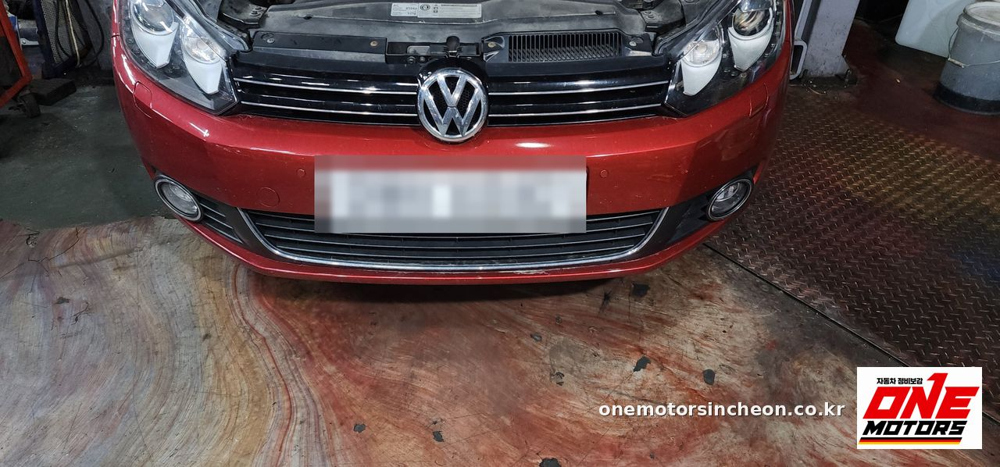
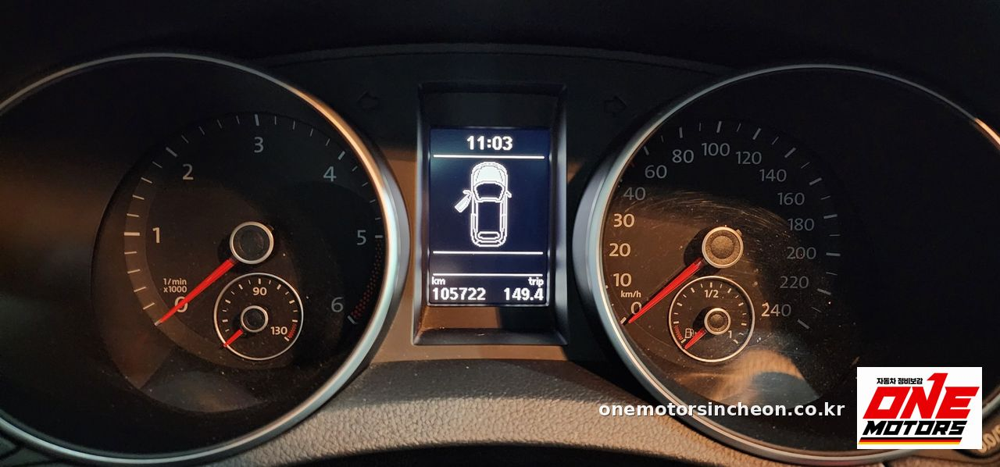
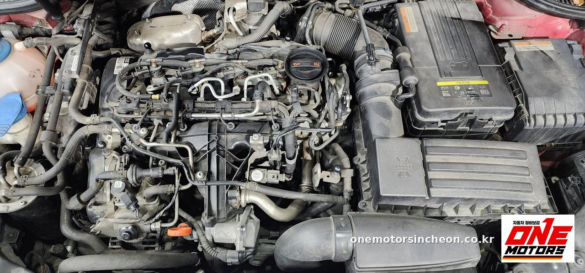
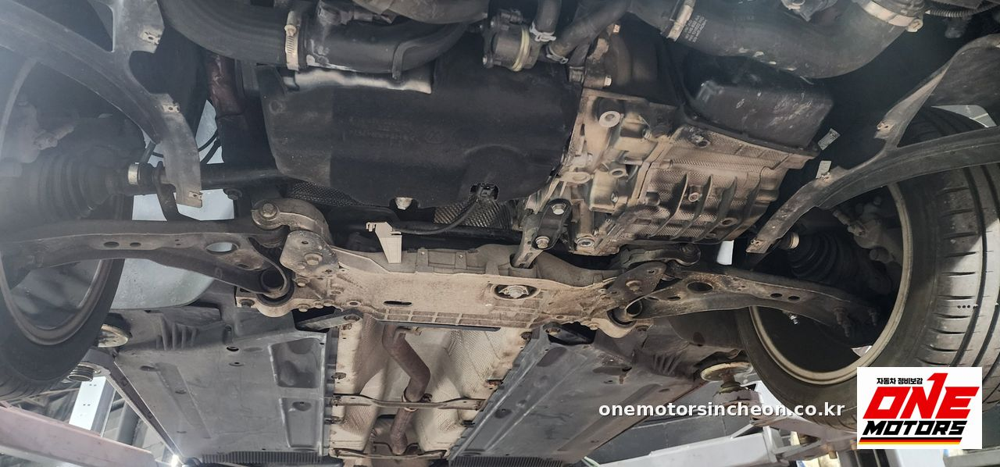
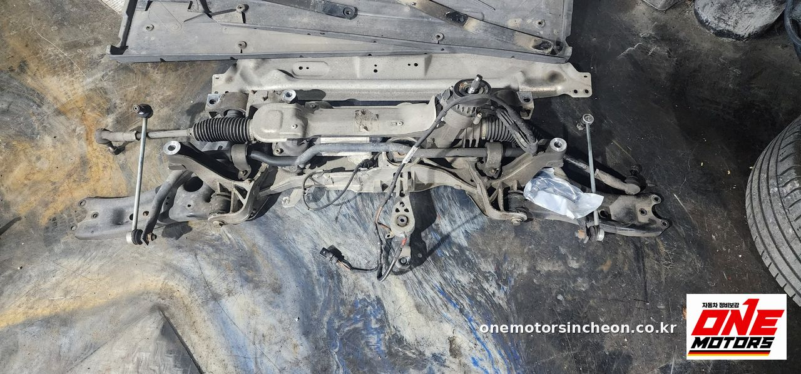
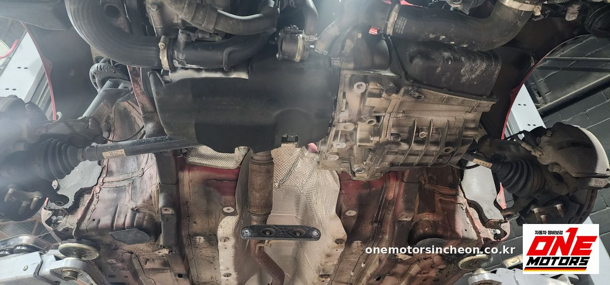
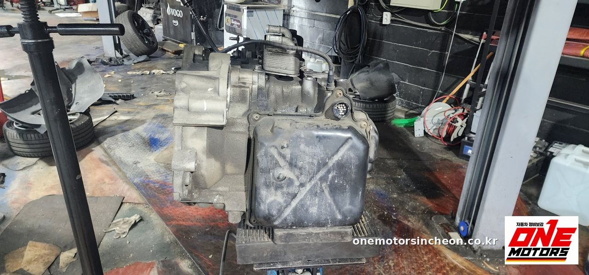
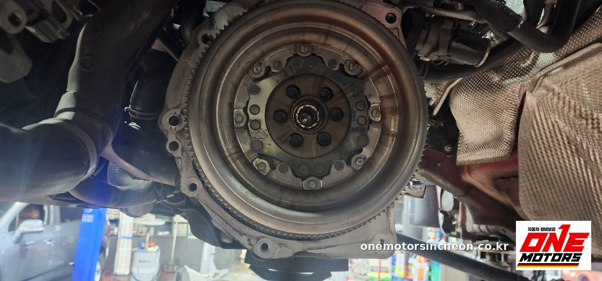
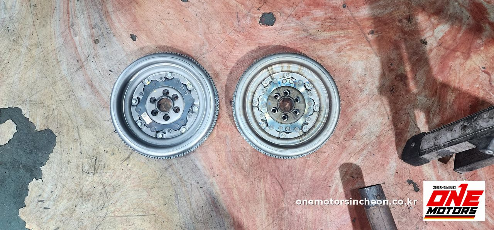
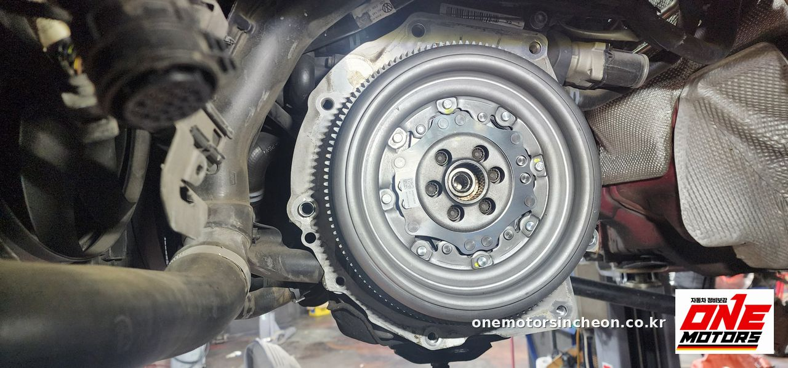
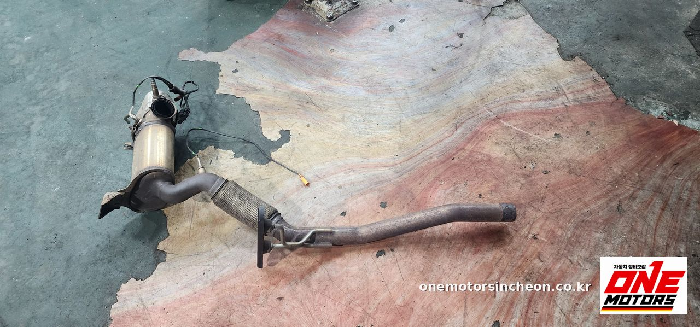
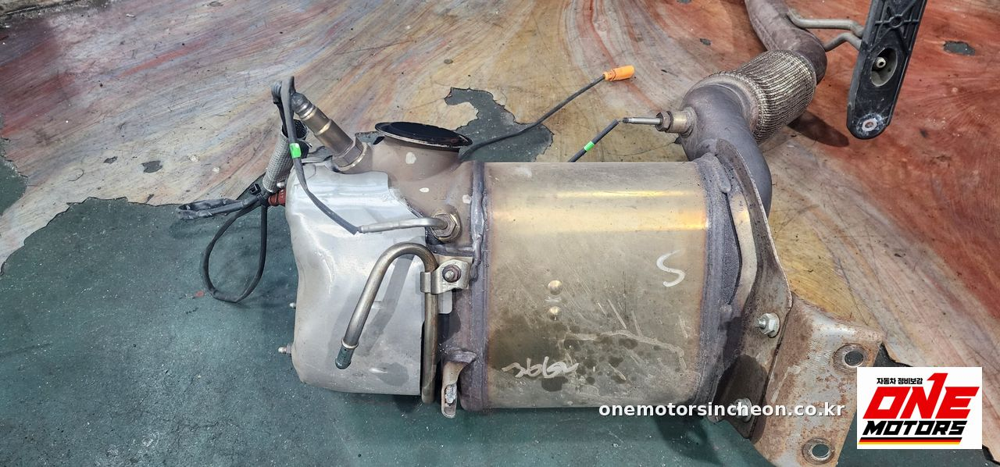
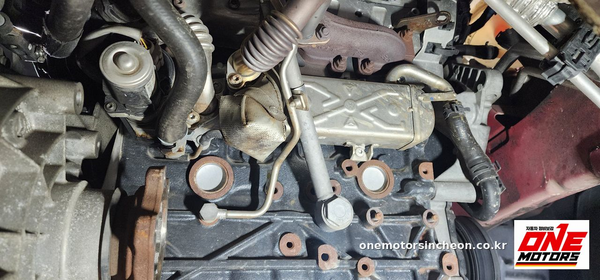
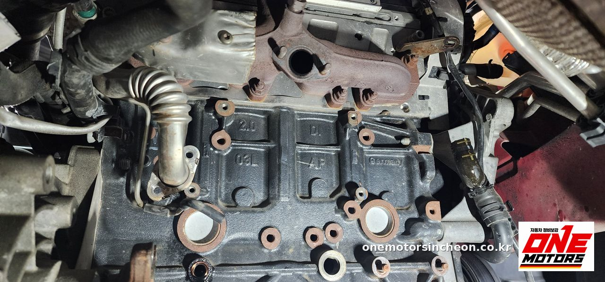
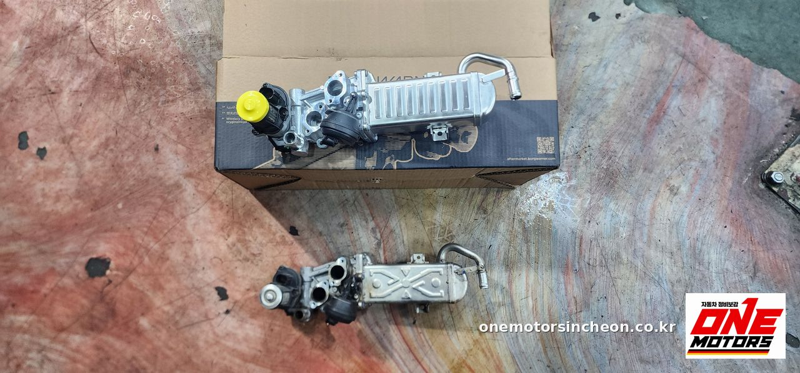
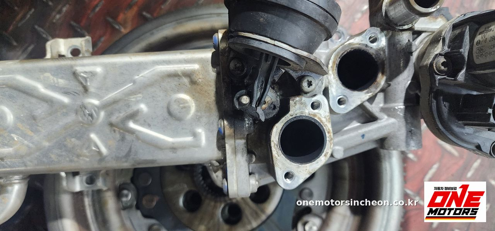
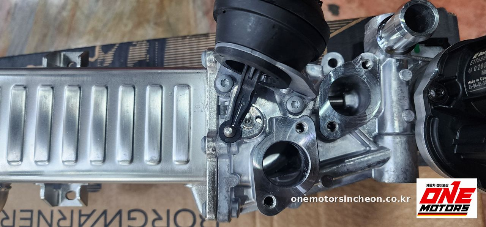
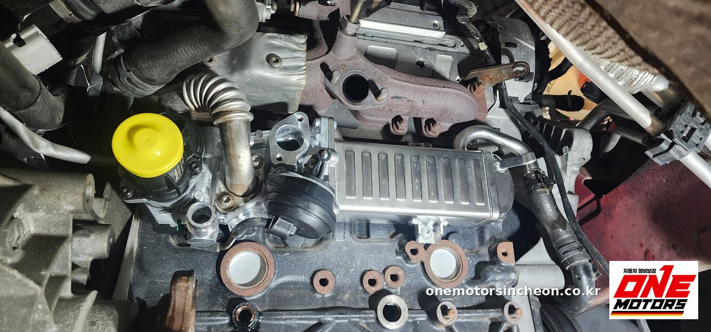
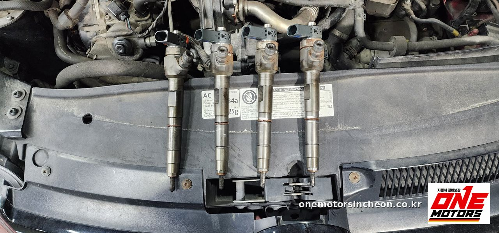
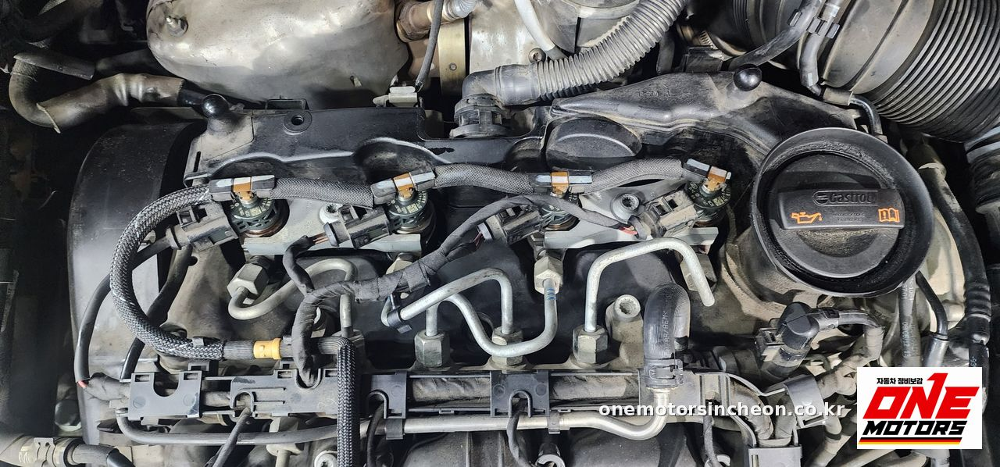
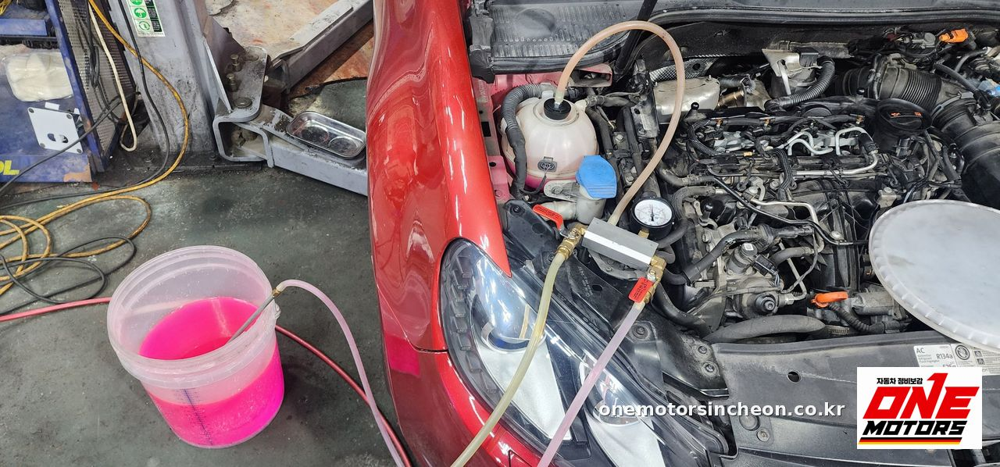
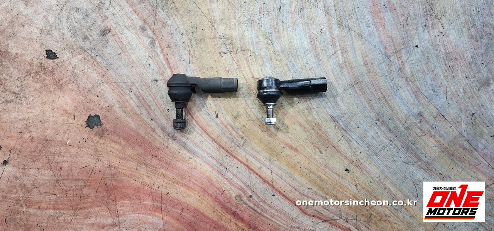
이런 증상으로 찾아오십니다
- 골프 카브리올레 정비
- 골프 카브리올레 2.0 TDI
- 폭스바겐 카브리올레 수리
- 골프 TDI 플라이휠
- 폭스바겐 플라이휠 교환
- 듀얼매스 플라이휠
- 플라이휠 소음
- 출발할 때 덜그럭거리는 소리
- 미션 탈거 작업
- 서브프레임 탈거
- EGR 쿨러 교환
- EGR 쿨러 카본
- EGR 밸브 플랩 카본
- EGR 쿨러는 청소로 되나요 교환해야 하나요
- EGR 쿨러 신품
- DPF 재생
- DPF 재생과 교체 차이
- DPF 떼어내서 재생
- 배기 라인 크리닝
- 인젝터 4개 자체 리빌드
- 인젝터 분사량 세팅
- 인젝터 리빌드 가능한가요
- 타이로드엔드 교환
- 플라이휠 갈 때 같이 하면 좋은 것
- 미션 내리는 김에 뭘 같이 해야 하나요
- 한 번 열 때 같이 하는 게 싼 이유
- 같은 자리 두 번 열면 공임도 두 번
- 플라이휠 공임이 왜 비싼가요
- 10만km 디젤 정비
- 과주행 수입차 디젤
- 인천 폭스바겐 정비
- 인천 골프 수리
- 인천 EGR 쿨러 교환
- 인천 플라이휠 교환
- 인천 DPF 재생
- 인천 수입차 미션 탈거
- 제물포구 수입차 정비소
- 인천 송현동 정비
- 원모터스 인천점
비슷한 증상이 있으시면 전화로 상담해 주세요. 차종과 연식, 증상만 알려주시면 예상 원인을 안내해 드립니다.
원모터스 인천점는 제조사 공식 서비스센터가 아닌 독립 정비업체입니다. 정비 내용은 차량 상태에 따라 달라질 수 있습니다.